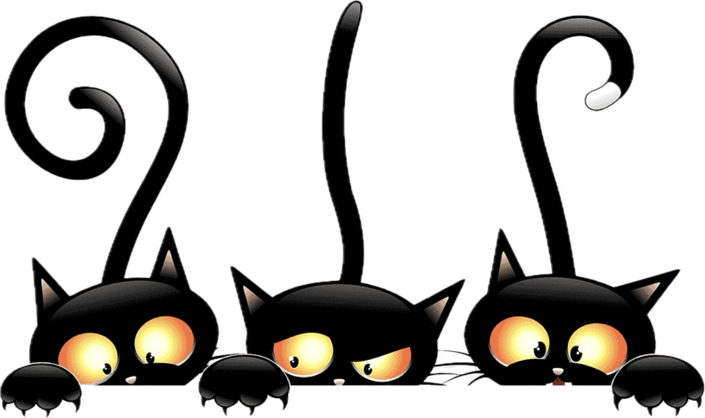
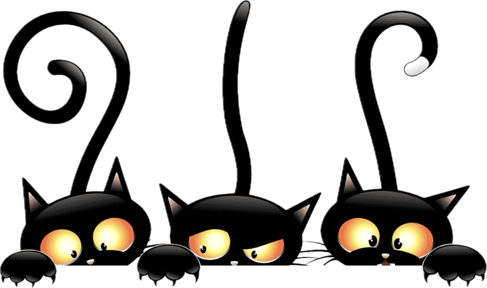

Who are you?
Name:전수빈
Age:24
Major:통계학과
MBTI:INFJ
간략하게 내 소개를 할게!
나는 통계학과 22학번 전수빈이라고 해!
나이는 01년생! 생일이 지났으니 만으로..23살이야!
내가 아직 사자가 되긴 이르다고 판단해서 페이지 컨셉을 고양이로 잡았고,
그래서 고양이(나)가 사자가 되는 과정을 이 페이지에 담아 구현해봤어!
내 MBTI는 천의 얼굴을 가졌다는... INFJ야!
낯을 왕 많이 가리긴 하지만...! 프론트엔드분들 모두와 친해지고 싶어
자세한 얘기는 밑에서 할게 끝까지 봐줘!
나는 멋쟁이 사자처럼 12기의 아기사자로
프론트엔드 파트에서 활동하고있어!
아직은 부족한게 많은 갓태어난 아기사자야! ^_^v
그래서 더 열심히 이곳에서 갈고 닦을려고 해!
나는 학생자치기구인 '총대의원회'에서
사무국장으로 일하고 있어!
이곳은 입법,사법권을 가진 자치기구로써
학생관할 사업을 심의,의결하고
감사하는 역할을 해!

나는 개발자라는 꿈이 생긴 이후로
작년 2학기부터 시작해서 지금까지
컴퓨터공학과를 복수전공 하고있어!
What do you do?
Favorites!
1.Games
첫번째로! 다들 눈치 챘겠지만 게임을 굉장히 좋아해
그렇다고 릴리아만 하는건아니야..
다양한 친구들도 플레이한단 의미에서
내가 좋아하는 친구들을 모아봤어!!!
같이 할 기회가 있었으면 좋겠다! 언제든 환영

2.Photo
다음으로! 사진 찍는걸 좋아해
내 사진찍는 것도 좋아하고 풍경찍는것도 좋아!
그래서 예쁜 카페나 맛집가는게 나에겐 힐링이야
3.Music
마지막으로! 노래듣는걸 좋아해
음악은 국가에서 허락한 유일한 마약이잖ㅇr..★
생각많은 날 산책하면서 노래들으면 기분전환되더라!
아! 그리고 코인노래방 가서 노래부르는것도 내 취미야!!
 


snubinny

@snu_bin
Hopes!
마지막으로 만들어보고 싶은 웹서비스의 방향성에 대해 소개할게!
나는 새내기때 OKIT이라는 앱 서포터즈로 활동을 했었는데
개발자 본인이 구현하고 싶은 이상향을
실제 어플로써 구현해내는걸 보고 이 직업에 흥미를 느꼈어
그래서!! 나도 다양한 언어가 익숙해질 때쯤...내 이상향을 웹서비스안에 녹여내고 싶어!